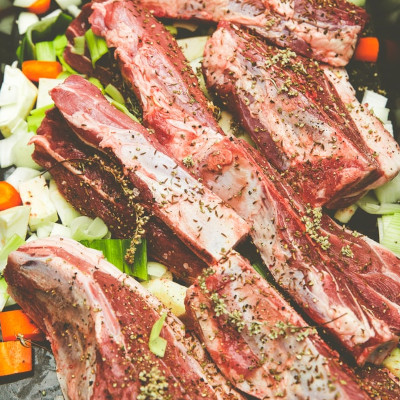
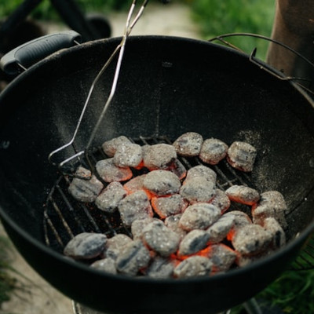
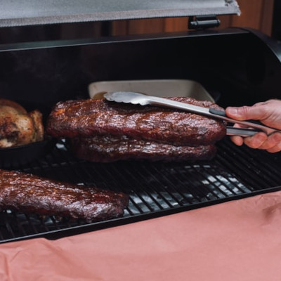

Costillas
Ingredientes
- 3kg de costillas de cerdo
- 125g de condimento para frotar la carne
- 500ml de salsa barbacoa
Preparación
- Frotar ambos lados de la carne con el condimento
- Envolver la carne en una película doble de plástico y dejar enfriar 24 horas
- Preparar la barbacoa y colocar las costillas en la parte menos caliente
- Asar las costillas hasta que estén tiernas, unas 2 ó 3 horas, dando la vuelta cada 30 minutos
- Sacar las costillas y envolverlas en papel de aluminio, dejándolas reposar durante 1 hora
- Retirar las envolturas y servirlas cubiertas en la salsa barbacoa


